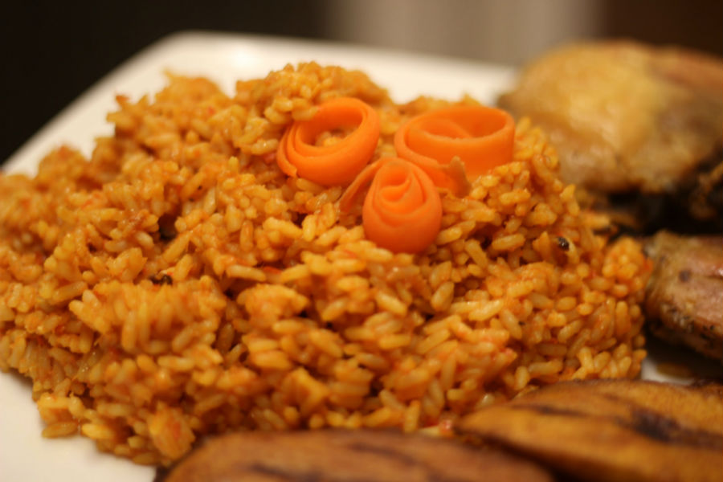

Preparing Jollof rice the Ghana Style should not be a difficult task. Jollof rice is a popular food enjoyed by a lot of Ghanaians, Nigerians, and other West Africans. It can be prepared in several ways; can be made with meat, vegetables, or tofu. The uniquely colored rice is often enjoyed at dinnertime, and also served at various parties, engagements and weddings.
Ingredients:
- 4 cups of rice
- 8 pieces of Chicken thighs and drum stickes
- 3 large onions
- Pepper, garlic, ginger (amount optional)
- Chicken seasoning/ seasoning of choice
- 2 cups mixed veggies
- 1 can Tomato Plumps &Tomato puree
- Salt to taste
- Maggie cube( optional)
Steps To Follow:
- Prepare chicken, wash and pat dry.
Add salt to season
Blend some onion,ginger, garlic and pepper
Add to the chicken, add chicken season if you want.
Steam the chicken for about 8-10 min.
- Blend plump tomatoes, with some onion and pepper depending on how spicy you want your Jollof rice.
Slice the remaining onions into medium sizes.
- Start making the stew or gravy by frying the sliced onions in about 3 table spoons of veggie oil and allow to cook for about 2 mins
Add 4 tablespoons of tomato puree and keep stirring for about 8 min till it is reduced.
Add the blended tomato mixture and allow to cook and reduce for about 10 more minutes, Stirring intermittently.
- When the steamed chicken is ready, strain out the stock and allow to cool.
Deep fry chicken for the golden brown crusty finish.
Put the fried chicken aside.
- Add the stock to the stew and allow to cook for about 5 minutes
Add your chicken to the stew (optional as chicken can be served separately when the Jollof rice is done).
Add the mixed veggies and cook for a couple of minutes (scoop some stew out if preferred to be served with Jollof rice later).
Add the rice and reduce the heat to very low. Cover the rice with kitchen foil and allow the food to steam through.
- Check and keep stirring intermittently till rice is cooked through, about 20 min.
- Scoop some of the rice in a small bowl and press to form a nice mould, turn into your serving plate. Add your chicken to the Jollof rice.
Can be served with up to four people with either salad, gravy etc.
source : www.farmartghana.com